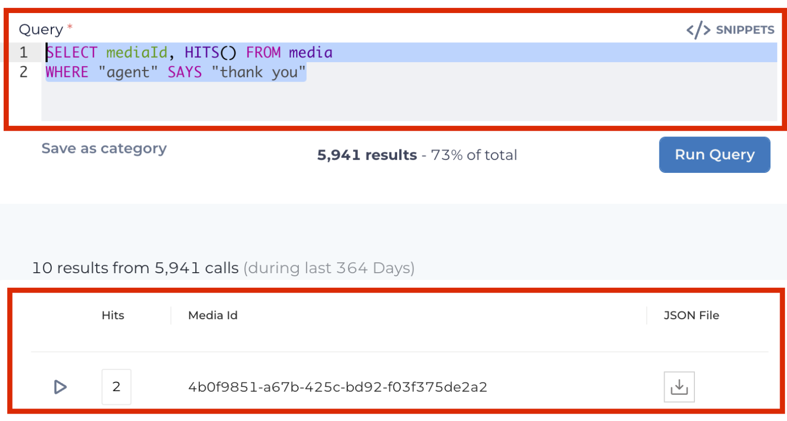
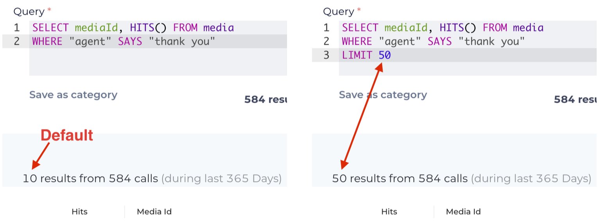
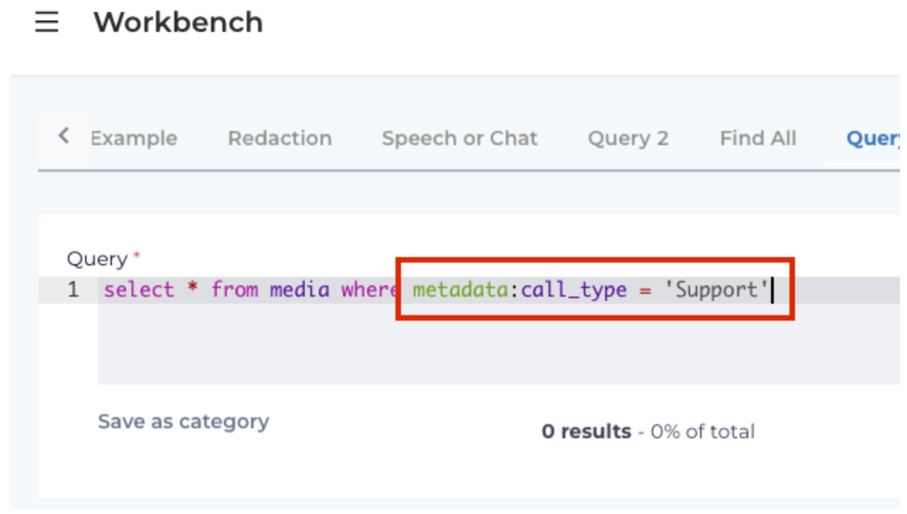

QuickStart VoiceBase Query Language Tutorial
Introduction
This is a quickstart tutorial on how to use VBQL (VoiceBase Query Language). If you are familiar or have had experience with SQL, you will find similarities with VBQL.
VBQL queries can be quite complex. This tutorial is aimed towards beginners and how they can use VBQL to create accurate queries. Let’s start with some things to keep in mind when working with VBQL
Guidelines for New Queries
Write out the goal in plain language first. For example, I want to find all the times the agent said “survey” during the last 30 seconds of the call.
Understand the goal. Is it more important that the agent sticks to the script and says “thank you”? Or, is it okay if the agent says “thanks”?
Start with a simple, catch-all query to find conversations with the event you’re looking to identify. If I’m looking for all the times the agent says "thank you", my script might look something like this:

Looking at the screenshot above, there are two areas highlighted.
The top image is the VBQL query itself.
SELECT mediaId,HITS()
are going to show "Hits" and "Media Id" in the results (bottom red rectangle). FROM media refers to the database I am searching. WHERE “agent” SAYS “thank you” is going to search the database and find every instance where the agent says “thank you”.
In the bottom red rectangle we see one of the results where there is a record with 2 hits. This record/transcription has 2 places where the agent said “thank you”:
Voice Data: Mono vs Stereo
Note the type of media you are working with. Are the voice conversations stereo or mono? When the conversations are stereo, you will typically have the Agent on the left channel and the Caller on the right channel. If the calls are mono, every query will need to show WHERE * SAYS instead of calling out the Agent or Caller. Remember that you could still use WHERE * SAYS for stereo as well. For example, maybe you want to find where either the caller or agent is saying a product name.
Expanding the Query with Operators
Let’s start to expand out our query and look at different results we can get. Here’s the original query again:
SELECT mediaId, HITS() FROM media
WHERE "agent" SAYS "thank you"
We’re going to focus on the operators we can use after SAYS:
AND Operator
The AND operator is used to search two terms in the entire transcript. If the query is,
WHERE "agent" SAYS "thank you" AND "survey" we are looking searching the entire transcript for where the agent says “thank you” and “survey”.
&& Operator
Using the && (double ampersand) operator is a little different than AND. This time, the query is WHERE "agent" SAYS ("thank you" && "survey") and we’re going to look at the speaker turn where the agent says “thank you” and “survey”. For example, if the agent were to say, “thank you for calling. Would you help us by taking a survey?”
OR Operator
Where AND and && search for two terms together, the OR operator is used to search one term or the other. Like AND, this is going to search the entire transcript. The query could be, WHERE "agent" SAYS "thank you" OR "thanks"
|| Operator
The || (double pipes or pipes) operator is different because it looks at the speaker turn like the && operator. The query here could be, WHERE "agent" SAYS ("thank you" || "thanks")
AND NOT Operator
The AND NOT operator is used when you want to find a specific term and not another term that might be similar. For example, we might want to find where agent’s are specifically saying “thanks for calling” and not “appreciate you calling”. Again, like AND or OR, this is going to search the entire transcript.
! Operator
The ! (bang) operator, like the && and || operators, is going to search the speaker turn. Our query is going to look like this:
WHERE "agent" SAYS ("thanks for calling" && ! "appreciate you calling")
Wildcard * Operator
Using * (wildcard) will help increase matches and simplify your queries. Let’s say we wanted to find “week”, “weekend”, “weekday”, or “weeks”. The query would look like WHERE "agent" SAYS "week*"
SLOP and / Operator
The SLOP and / operators are broader wildcard queries. Using SLOP or / allows you to fill in the blanks with phrases. For example, you could use a query like:
WHERE "agent" SAYS ("thanks for calling" || "thank you for calling" || "thanks so much for calling")
but a simpler way would be to use:
WHERE "agent" SAYS ("thank* calling"/3)
Above, we’re using a * (wildcard) for the word "thank" to cover "thank" and "thanks". the /3 allows for 3 wildcard terms between "thank*" and "calling". So, "thanks for calling”, “thank you for calling”, “thanks so much for calling” would all match here.
[beginningtime s, endingtime s]
Time constraints. Useful for finding something during the first xx seconds of a conversation or during the last xx seconds of a conversation.
Adding Operators to the Query
Our initial VBQL query was:
SELECT mediaId, HITS() FROM media
WHERE "agent" SAYS "thank you"
The above query is going to find all conversations where the agent says “thank you”. That could be at any point during the conversation.
Now that we’ve learned how we can expand our query to gather more meaningful results, let’s expand our query. Maybe I want to find all forms of gratitude by the agent AND I want the query to focus on the last 30 seconds of the call. Using our operators from above, we can now do this:
SELECT mediaId, HITS() FROM media
WHERE "agent" SAYS ("thank*"||"you for call*"/2||"appreciate*||"wonderful day"/2||"great day"/2||"good morning"/2||"good after*"/2||"good night"/2||"enjoy day"/2||"enjoy week*"/2||"great week*"/2||"good week*"/2||"cheers") [-30s,]
With the above query, I’m now looking for any instance where the agent expresses gratitude by saying something like, “thanks for calling”, “have a good weekend”, “enjoy the day” or “great day” during the last 30 seconds of the call.
Useful Queries for Your Workbench
Below are five useful queries to add to your workbench:
Date Range - Find records within a given date range
SELECT * FROM media WHERE dateCreated > '2022-06-06T00:00:00.000Z' AND dateCreated < '2002-08-08T23:59:59.000Z'
ORDER BY dateCreated DESC
Greater than date - Find records after a given date range
SELECT * FROM media WHERE dateCreated > "2022-06-06T08:00:00.000Z"
Media ID - Find a record using the mediaId
WHERE mediaId="4da3b01e-d954-4aeb-a3b3-d059a1da93d1"
All conversations - Finds all records
SELECT * FROM media
WHERE * ORDER BY dateCreated DESC
Interaction Type - Find all records by speech (voice) or chat
SELECT *, HITS() FROM media
WHERE interactionType="speech"WHERE interactionType="chat"Advanced Query Language
Here are some additional options you can add to your queries:
LIMIT
Use LIMIT (row_count) to increase the numbers of records returned in a search. The default result is 10 rows. Using LIMIT, you can increase the number of rows. Maximum to return is 50 results. 
ORDER BY
Orders results by specific field(s) for ad-hoc query building. Options include; field_name, alias_name, ASC (ascending) or DESC (descending)

In this example, we are using ORDER BY to sort by the Date Created column in DESC (descending) order.
Filter by METADATA
Utilize metadata fields within queries to specify a subset of conversations to analyze.
Examples would be metadata.department="international shipping" or metadata.campaign_name=
EOY 50% Off"
